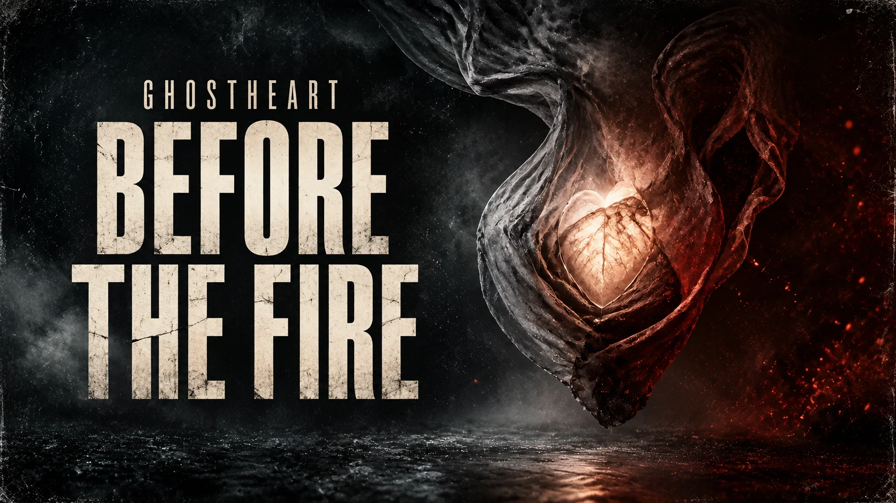
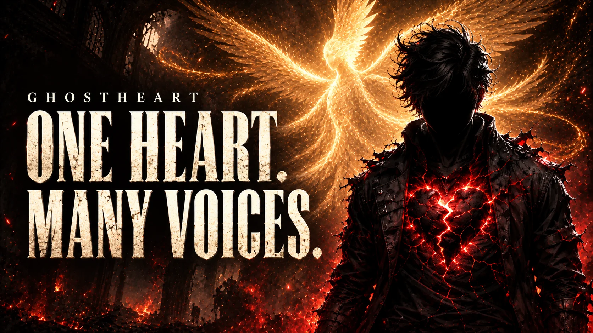

01 / 7 films
GhostHeart's Mission
Protect the Light
For the judged, the shut out, and the people told to disappear. Songs that stand beside the wounded and defend the light in others.
Start here
Human-written songs for outsiders, survivors, and people who were written off. Start with Hey Preacher Man. Follow the heart from there.

One flagship song
A direct answer to the judgment that tried to define a life from the outside.
Stay close
New songs and honest stories, sent only when there is something worth sharing.
Music / Story / Purpose
Start with the mission. Follow the life. Meet the versions. The same three paths on the website and on YouTube.
01 / 7 films
Protect the Light
For the judged, the shut out, and the people told to disappear. Songs that stand beside the wounded and defend the light in others.

02 / 12 films
Before the Fire Had a Name
The beginnings. The grief. The people who stayed. Follow the life behind the name, from surviving the dark to choosing another morning.

03 / 5 films
One Heart. Many Voices.
The man, the survivor, the protector—and the Angel beside him. Meet the voices one heart learned to carry.
There is more to every heart. Meet GhostHeart's Angel →
New to the story?
Hear a 30-second introduction from “This Is GhostHeart”—the song behind the name, the scars, and the reason a hidden heart chose to be seen.
This Is GhostHeart • 30-second preview • ready